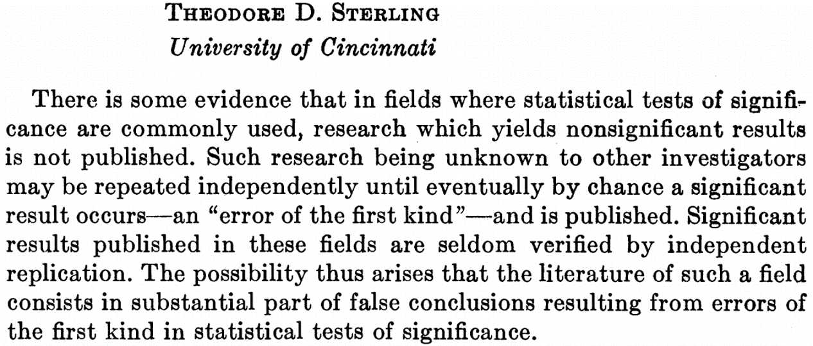
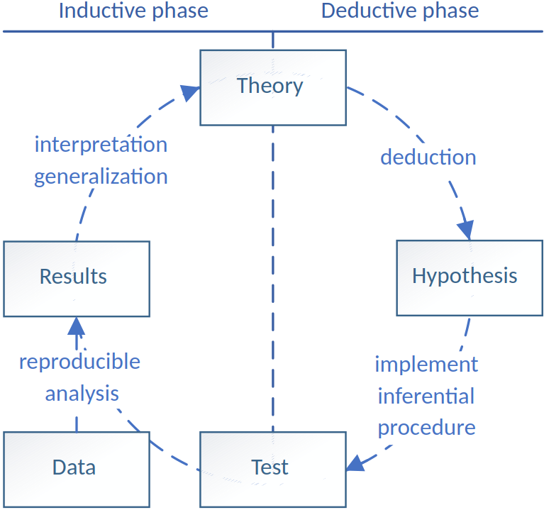
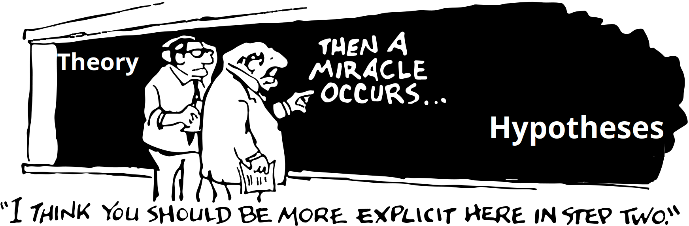

The Theory Crisis
38% (of 100 psychological effects) replicated in the Open Science Collaboration project (2015)
“most psychologists acknowledge that a crisis exists and seem to blame it on poor methodological and statistical practices.”
Sterling, 1959:


Based on De Groot, 1961 (by Van Lissa, 2025)

Three sections:
Time with me
Time with Ward
Almost no extra work for the examination if you just prepare for class and make the tutorials
Open quiz
Help diagnose the problem: Have you seen evidence of the theory crisis in your studies? Mention your subfield in your answer.
Contrarian position: What is going well?
Muthukrishna & Henrich emphasize theory as the framework that makes individual findings scientifically meaningful (the metaphor of findings as bricks and theory as the house), whereas Eronen & Bringmann argue that we first need robust phenomena to constrain the space of possible theories. Where do you stand - would you begin by developing a theory or by establishing phenomena, and why?
Suppose someone invents a method that allows you to test empirical findings with perfect accuracy. The replication crisis is now gone. How would this impact the theory crisis?
Referring to the theory crisis, Muthukrishna writes: “Compounding the problem, most psychologists are WEIRD (Western educated industrialized rich democratic); their lives and intuitions often differ in dramatic ways from those of people in most societies, undercutting our efforts to accumulate knowledge” -> Does the fact that most psychologists are WEIRD indeed compound the problem?
Muthukrishna mentions the example of the “precambrian rabbit”: If one would find a rabbit fossil in rock from the precambrian period, before their supposed evolution - that would provide incontrovertible evidence to disprove evolutionary theory. Do such indisputible findings exist for psychological theory too? Can you think of examples?
Newsworthy findings are surprising, but often with respect to lay intuitions
A mature theory would tell us what is truly surprising, e.g., the Precambrian rabbit
Evolutionary theory makes the observation consequential: it tells us what would count as a serious anomaly.
Ask yourself: What observations would force us to revise a general theory of human behavior?
“Science is built up of facts, as a house is built of stones; but an accumulation of facts is no more a science than a heap of stones is a house.” Henri Poincaré
Methodological and statistical reforms can help ensure solid stones.
Theory supplies the architecture for building a house of cumulative findings
Undergraduates walk slower when reminded of the elderly (famous priming study)
These questions are not automatically answered, you have to do the theoretical work
The scientific process often looks less like clean induction or deduction and more like abduction:
phenomenon -> possible explanations -> best explanation
The “hypothesis space”: the set/space of all possible explanations
Theory helps narrow down this space
A vase is broken. We observe:
We can collect observations, do experiments
Theories about wind force, cat behavior, and toddler’s developmental abilities constrain the hypothesis space before data collection.
“Experiments are arguably the last resort after competing theoretical predictions cannot be distinguished with existing evidence…”
An experiment is most informative when competing theories already make distinguishable predictions.
| Term | Definition |
|---|---|
| Theoretical framework | Broad body of connected theories |
| Theory | General, unifying explanation across a wide array of data |
| Hypothesis | Testable, falsifiable prediction that can distinguish theories |
| Data | Observations used to test hypotheses |
Formal modelling makes explicit:
Models are thinking aids; externalize your assumptions instead of keeping them in working memory
The danger is that an effect seems interesting (and newsworthy) because it is surprising
But surprising relative to what?
“‘surprising’ should occur with reference to particular hypotheses derived from a broader general theory, not based on folk intuitions and theories derived from one’s own life experience.”
Surprise is only productive when a theory told us what to expect.
The authors argue that psychologists’ own experiences may be an unreliable source of intuitions about humanity because psychologists are disproportionately WEIRD: Western, Educated, Industrialized, Rich, and Democratic.
This can distort which phenomena seem natural, surprising, or universal and can impede theory-building about human minds more generally
Eronen and Bringmann, 2021:
Theory testing is bidirectional:
A theory must accommodate the relevant robust phenomena, narrowing the space of plausible explanations (Bechtel & Richardson, 1993; Craver & Darden, 2013).
Darwin accumulated observations across:
Patterns were independently detectable and verifiable, creating strong constraints on evolutionary explanations.
Many areas lack a large body of robust phenomena.
Evidence may underdetermine theory: several theories can remain compatible with what we observe (Stanford, 2017)
Original account: self-control draws on a limited resource (Baumeister et al., 1998, 2000)
A preregistered multilab replication found an overall effect of only d = 0.04 (Hagger et al., 2016), most CI’s included zero
Even if an effect exists, alternative explanations remain possible
Psychology continually introduces constructs and scales (Hagger, 2014)
For a construct to support theory:
Validity often receives less attention than reliability
Reliability has convenient quantitative summaries such as Cronbach’s \(\alpha\)
Validity is harder:
Does variation in the attribute actually produce variation in the measure?
A review of JPSP articles found that most reported no validity evidence (Flake et al., 2017)
The MDD construct illustrates the problem:
Do they even capture a single well-defined construct? (De Jonge et al., 2015; Fried, 2017; Fried & Flake, 2018).
Scientific concepts should be repeatedly:
Natural-science classifications often change as evidence and theory develop.
Psychological construct validation is less consistently treated as this kind of ongoing process (Flake et al., 2017).
The concept memory was initially considered to be a single faculty (Tulving, 2007; Michaelian & Sutton, 2017)
Later work differentiated:
Even psychological concepts can be iteratibvely refined
Good theories specify causal relationships (Craver, 2007; Pearl, 2000; Woodward, 2003).
Interventionist definition of causality:
Psychological variables are difficult to manipulate cleanly
Psychological manipulations often change several things at once (Eronen, 2020).
Trying to manipulate one state - e.g., ego depletion - may also change:
Poorer subsequent performance does not unambiguously point to depleted self-control (Friese et al., 2019)
Prioritize phenomenon-driven research:
(Borsboom et al., 2021; De Houwer, 2011; Haig, 2013; Trafimow & Earp, 2016)
Calls for more formal theory are common (Borsboom et al., 2021; Muthukrishna & Henrich, 2019; Oberauer & Lewandowsky, 2019; van Rooij & Baggio, 2021).
But formalization alone does not solve:
Complex models cannot substitute for a solid conceptual and empirical foundation.